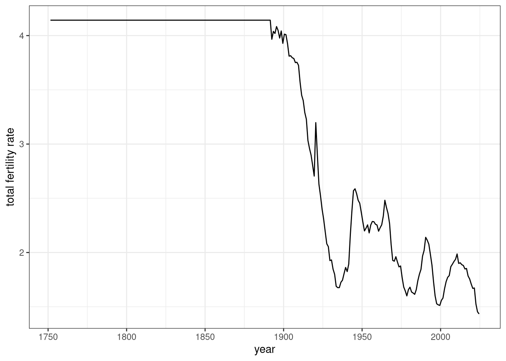
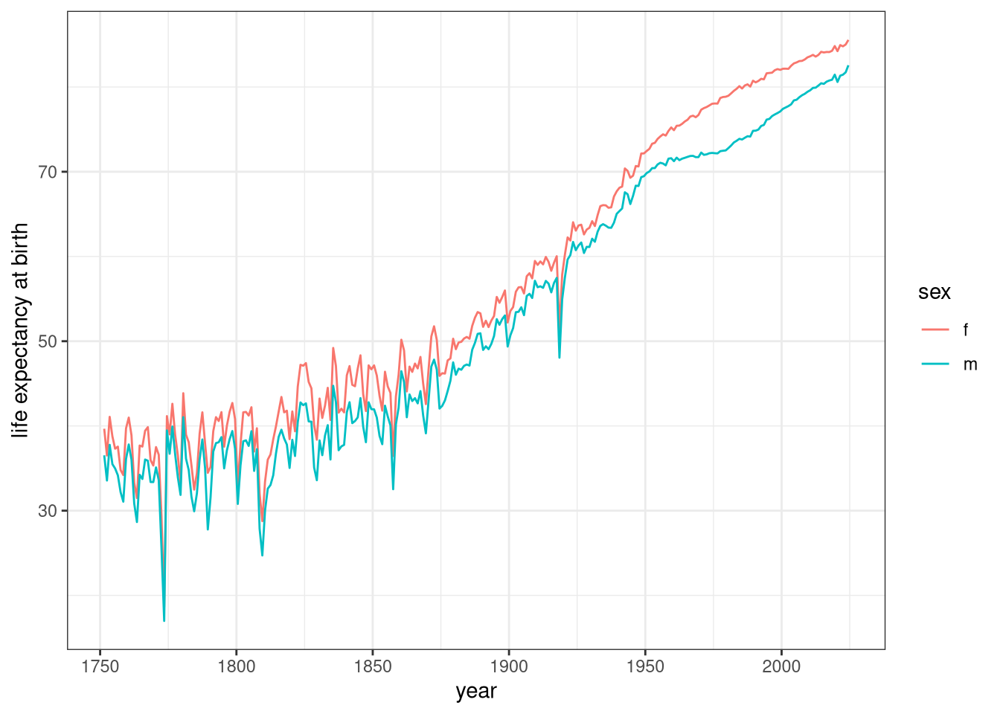
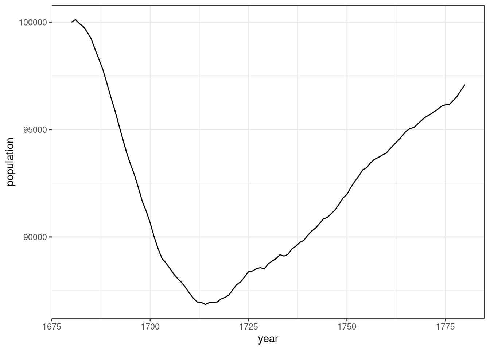
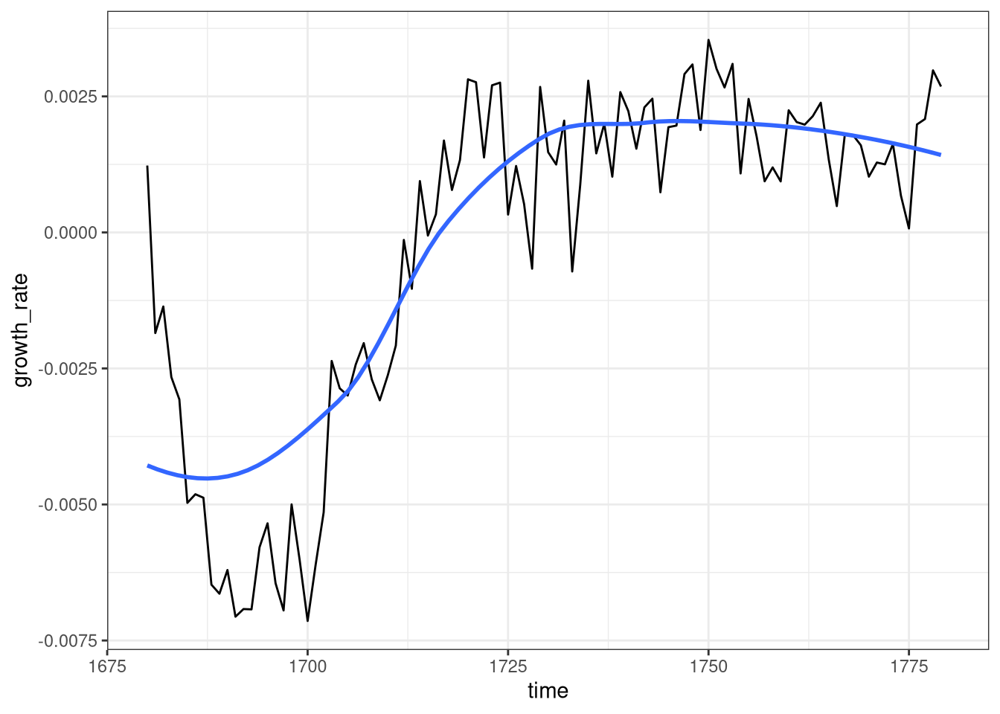
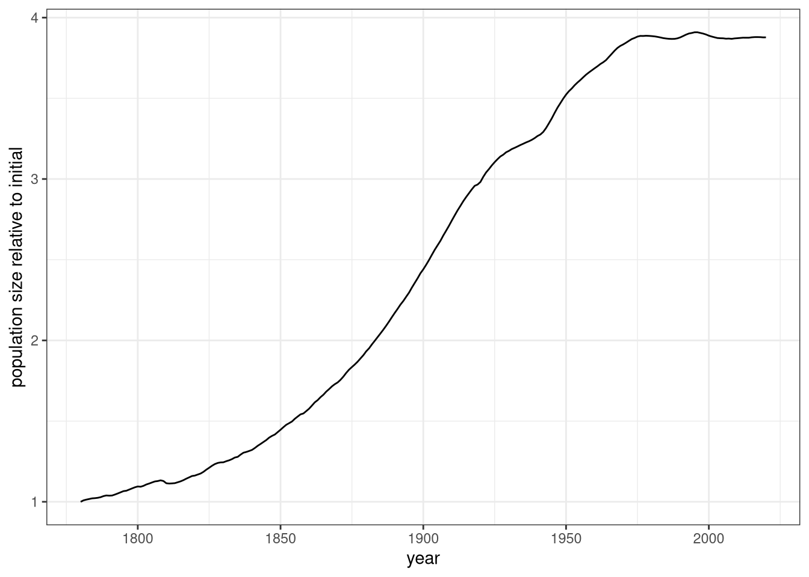
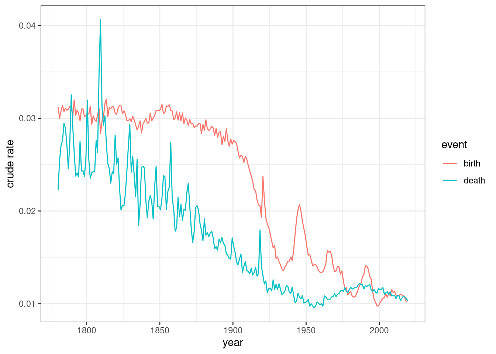
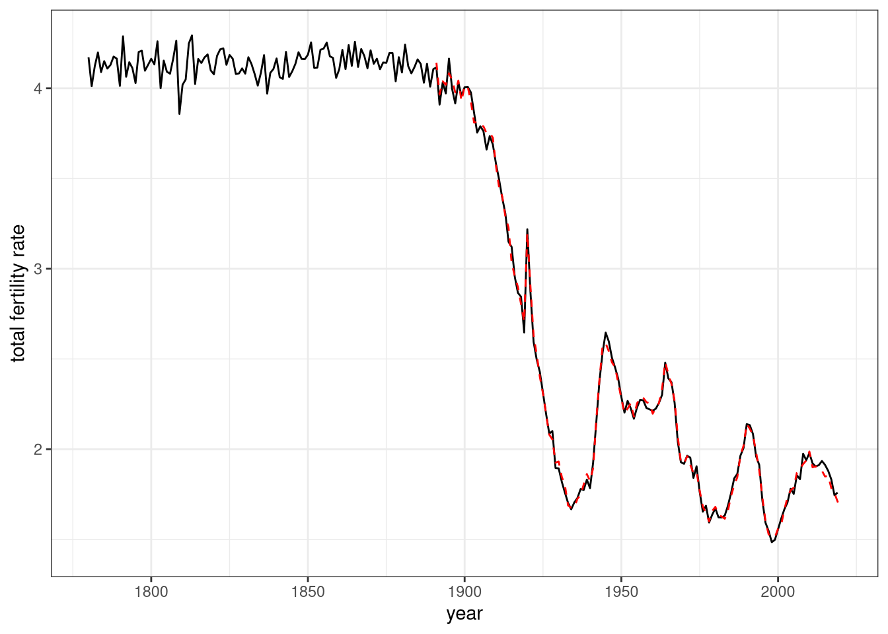
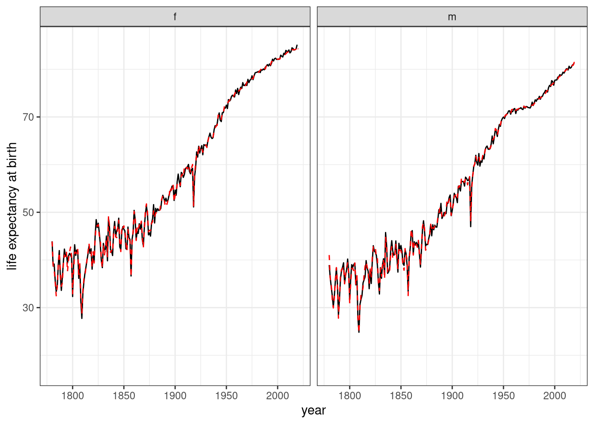
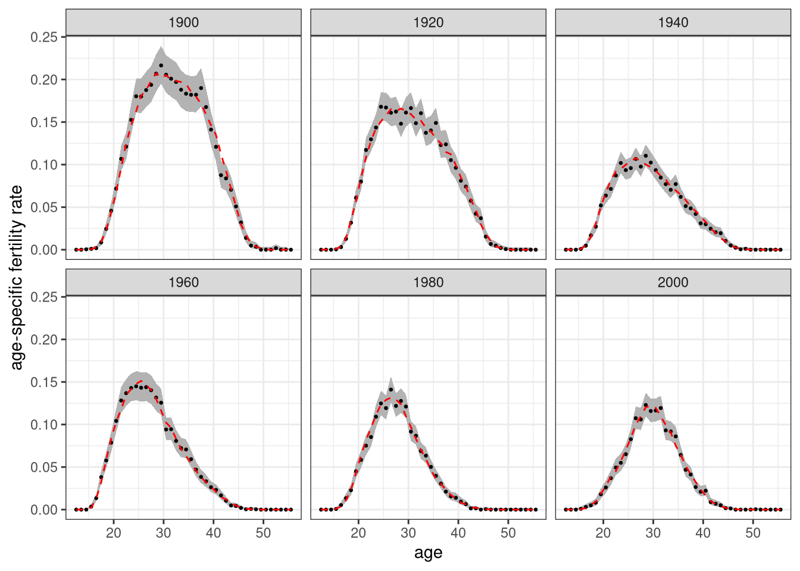
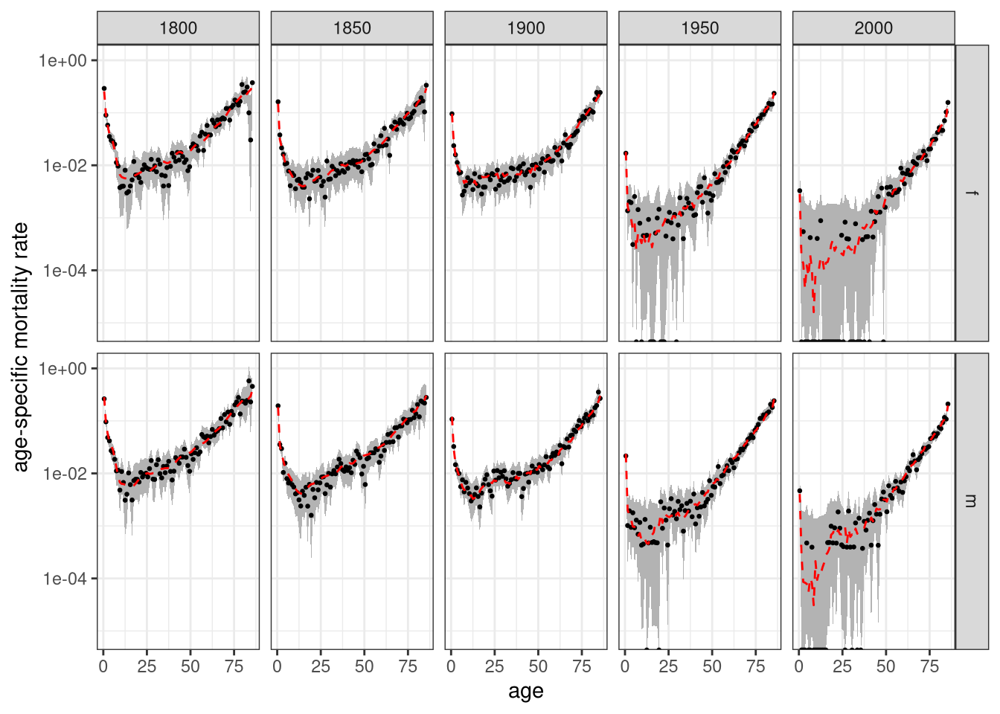

fertility_rates_sweden <- get_fertility_hfd("SWE", 1891:2024)
mortality_rates_sweden <- get_mortality_hmd("SWE", 1751:2024, open_age = 85)The demographic transition was the transition from high mortality/high fertility rates to low mortality/low fertility rates. Typically, mortality rates fell before fertility rates, leading to a period of sustained high population growth. This transition began in Europe and other more developed countries in the nineteenth century and was complete by the early twentieth century. The rest of the world experienced an accelerated demographic transition beginning in the mid-twentieth century.
To demonstrate Hammel’s capabilities, we will micro-simulate the demographic transition in Sweden. Sweden provides a great example because it has some of the best long-term historical data for tracking fertility and mortality rates (among other things).
Gathering Inputs
For this exercise, historical age-specific fertility and mortality rates are required. These rates can be found at the Human Fertility Database (HFD) and Human Mortality Database (HMD), respectively. We can use the helper functions of get_fertility_hfd and get_mortality_hmd to quickly get these rate schedules set up.
Both of these databases require a login to download data. To automate this procedure, you can add the following to the .Renviron in your home directory.
HMD_USERNAME="username here"
HMD_PASSWORD="password here"
HFD_USERNAME="username here"
HFD_PASSWORD="password here"If you have usethis installed, you can usethis::edit_r_environ(scope = "user") to edit the file, although you will also need to have a text editor set up in your options (e.g. options(editor = "nano")).
Once the credentials are set up, we can download the data.
We are downloading the entire series here for both mortality and fertility. Mortality rates go back to 1751 and fertility rates go back to 1891. Age-specific mortality rates from the HMD use the 110 age category as the default open-ended category. However, in historical data this can sometimes lead to missing values at the oldest ages, so we truncate the open age category to 95 with the open_age = 85 argument. The function will download death and exposure counts to estimate the mortality rate in this open-ended age category correctly.
Lets take a peak at one of these schedules.
fertility_rates_sweden
#> # A tibble: 5,896 × 5
#> age_start age_end rate time_start time_end
#> <dbl> <dbl> <dbl> <int> <dbl>
#> 1 12 13 0 1891 1892
#> 2 13 14 0.00002 1891 1892
#> 3 14 15 0.00002 1891 1892
#> 4 15 16 0.00046 1891 1892
#> 5 16 17 0.0021 1891 1892
#> 6 17 18 0.00636 1891 1892
#> 7 18 19 0.0157 1891 1892
#> 8 19 20 0.0338 1891 1892
#> 9 20 21 0.0609 1891 1892
#> 10 21 22 0.0823 1891 1892
#> # ℹ 5,886 more rowsThe output shows the typical structure of rate schedules used by hammel. All rate schedules require age_start and age_end columns to define age bands using the half-open intervals of [age_start, age_end).1 Open-ended intervals can be indicated by using Inf for age_end. The rate column contains the actual rate. These are true rates defined by events over person-years, not probabilities.
Rate schedules can be stratified by other variables. In this case, we are using time_start and time_end to stratify the rate schedules by time period, using one year time periods of [time_start, time_end). Other stratification is possible, but we will not use it here for fertility. The mortality schedules always require an additional stratification variable of sex (with “m” and “f” categories).
The fertility rates we have here start a bit late. Mortality decline was already well under way by 1891, so if we only start in 1891 we will miss a lot of the important action. We are going to cheat a bit here by extending the 1891 fertility schedule backwards to 1751 as well, treating it as if it was constant over this time period. This is not strictly true, but most of the fertility decline in Sweden happened after 1891 so this will give us a reasonable approximation for this demonstration.
fertility_rates_sweden <- bind_rows(
# add an additional row with 1891 values that extends from 1751 to 1891
fertility_rates_sweden |>
filter(time_start == 1891) |>
mutate(time_start = 1751, time_end = 1891),
fertility_rates_sweden
)Lets take a look at the implied total fertility rate (TFR) from these input rates. We can can do this using the calculate_tfr helper function which is designed to work on both input rate schedules and simulation output from the calculate_fertility_rates function. It will automatically detect stratification variables and calculate TFR within each stratum (in this case time periods).
fertility_rates_sweden |>
calculate_tfr() |>
ggplot(aes(x = time_start + 0.5, y = tfr))+
geom_line()+
labs(x = "year", y = "total fertility rate")
Figure 1 shows a dramatic drop in fertility from 1891 through the pre-WWII era, as well as a baby boom in the immediate post-WWII era. Also we can see the flat line produced before 1891 due to our projecting the 1891 backwards.
Now lets look at the life expectancy at birth from the mortality schedule using the similar calculate_life_table helper function.
mortality_rates_sweden |>
calculate_life_table() |>
filter(age_start == 0) |>
ggplot(aes(x = time_start + 0.5, y = ex, color = sex))+
geom_line()+
labs(x = "year", y = "life expectancy at birth")
Figure 2 shows the expected increase in life expectancy over the time period, particularly after 1800. The early period is characterized by much more volatility from year to year as well. Throughout the time period we can see the women have a higher life expectancy than men.
Initializing the Starting Population
We now need to determine where to start my simulation and how to generate the starting population. We choose 1780 as the starting point because this time point will include some of the early period before mortality started to substantially decline, providing a better pre and post illustration.
I can create a starting population with the create_baseline_population function. However, this function will create a population that is uniformly distributed by age up to the max_age argument. Typically, the best approach is to run a simulation for a certain number of years at constant rates to produce a stable population distribution. We call this the “burn in” period.
To burn in a starting population, we need to select a set of mortality and fertility rates. We want to choose these schedules from among the pre-transition years in order to create a more or less stationary population (e.g. zero growth rate). After some experimentation, I determined that pairing the 1891 fertility rates with the 1811 mortality rates produces a stable population with a nearly zero growth rate. The appendix includes details on how this was determined.
I can now run a “burn in” simulation over 100 years to produce my desired starting population. To do this I start with a uniform distribution by age and then simulate this population forward.
# get stationary rates, remove time variables to avoid errors
fert_rates <- fertility_rates_sweden |> filter(time_start == 1891) |>
select(-starts_with("time_"))
mort_rates <- mortality_rates_sweden |> filter(time_start == 1811) |>
select(-starts_with("time_"))
# The starting population should have ending times equal to my start date - 100
pop <- create_baseline_population(100000, 70, 1780 - 100)
# set up the model
model <- hammel_model() |>
set_population(pop) |>
set_fertility(fert_rates) |>
set_mortality(mort_rates) |>
set_union_formation("on_demand")
# simulate for 100 years to get my starting population
pop_start <- simulate(model, 100, seed = 1)When I create the baseline population, we need to specify end_time. Birth times for the randomly generated population will extend backwards from this value, so this will give the starting year for my simulation. Since we want the real simulation to start in 1780 and we want to project forward this burn in simulation 100 years, this argument needs to be 1680.
When setting up the model, the only three required processes are fertility, mortality, and union formation. In this case, we are not interested in a detailed tracking of marriages and so we will use the “on_demand” method. This just generates a union whenever a currently unpartnered woman gives birth.
Lets take a look at the population size of this simulation over the time period using the calculate_population_size helper function.
calculate_population_size(pop_start, 1680:1780) |>
ggplot(aes(x = time, y = population))+
geom_line()+
labs(x = "year")
Figure 3 shows that there is an initial drop in the population size in the early period of the simulation before it stabilizes in the early 1700s and seems to grow at a fairly constant and low rate. This early drop is anticipated because the initial population provided was not a stable population distribution and over-represented older individuals that quickly die off in this high mortality environment.
As a final check, lets look at the annual growth rate of this population over the time period.
calculate_population_size(pop_start, 1680:1780) |>
mutate(growth_rate = log(lead(population) / population)) |>
ggplot(aes(x = time, y = growth_rate))+
geom_line()+
geom_smooth(se = FALSE)
labs(x = "year")
#> <ggplot2::labels> List of 1
#> $ x: chr "year"
Figure 4 shows that the population growth rate is settling into a low positive growth rate, with some year to year noise, by the mid-point of the burn-in period, as we would expect of a stable population.
Running the Simulation
We are now ready to run the simulation. To do this we just need to use the time-varying rate schedules. The simulation will pick up the correct rates to use in each year of the simulation. We will run the simulation from 1780 to 2020. Note that the rate schedules extend beyond these time points, but we don’t need to trim them to just the time period we want.
model <- hammel_model() |>
# use the starting population we just created
set_population(pop_start) |>
# feed in the time-varying rate schedules
set_fertility(fertility_rates_sweden) |>
set_mortality(mortality_rates_sweden) |>
# on demand works fine here because our focus is on the fertility and mortility
set_union_formation("on_demand")
sim_time_demog_trans <- system.time(pop_final <- simulate(model, 2020 - 1780, seed = 1))The simulation took 47.308 seconds to run.
Analyzing the Simulation Results
Lets start by looking at the population size over the time period of the simulation.
pop_final |> calculate_population_size(1780:2020) |>
ggplot(aes(x = time, y = population / first(population)))+
geom_line()+
labs(x = "year", y = "population size relative to initial")
Figure 5 displays the classic S-shaped curve expected of the demographic transition, although we start late enough in 1780 that it is already rising a bit at the beginning. The population grows by four-fold over the simulation period.
Another classic representation of the demographic transition is to display the crude birth and death rates over time. These rates are constructed by taking the number of births or deaths divided by the mid-year population. Because the simulation is a continuous time simulation, calculate_population_size does not complain about non-integer time values.
births <- pop_final$persons |>
mutate(year = floor(birth_time)) |>
count(year, name = "births")
deaths <- pop_final$persons |>
mutate(year = floor(death_time)) |>
count(year, name = "deaths")
crude_rates <- calculate_population_size(pop_final, 1780:2019 + 0.5) |>
mutate(year = floor(time)) |>
left_join(births, by = "year") |>
left_join(deaths, by = "year") |>
mutate(rate_birth = births / population, rate_death = deaths / population) |>
pivot_longer(cols = starts_with("rate_"), names_prefix = "rate_",
names_to = "event", values_to = "crude_rate")
crude_rates |>
ggplot(aes(x = time, y = crude_rate, color = event))+
geom_line()+
labs(x = "year", y = "crude rate")
Figure 6 illustrates why population growth occurs during the demographic transition. Death rates fall first followed after a delay by birth rates. The difference in rates due to that lag generates sustained population growth during the transition.
Next, we can use the calculate_fertility_rates helper function to estimate age-specific fertility rates in each year of the simulation and convert these into total fertility rates with the calculate_tfr function. Like all of the calculate_*_rates helper functions, calculate_fertility_rates will calculate events and person-years lived within lexis triangles, based on the age and time breaks provided by the user. It can also be stratified by the same variables that are used to stratify input rates and produces an object of the same structure as the input rates, making comparison straightforward.
input_tfr <- fertility_rates_sweden |>
calculate_tfr()
pop_final |>
calculate_fertility_rates(time_breaks = 1780:2020, age_breaks = 12:55) |>
calculate_tfr() |>
ggplot(aes(x = time_start, y = tfr))+
geom_line()+
geom_line(data = input_tfr, linetype = 2, color = 'red')+
scale_x_continuous(limits = c(1780, 2020))+
labs(x = "year", y = "total fertility rate")
Figure 7 shows the estimated TFR for each year of the simulation. The dotted red line shows the TFR from the input rates. The estimated TFRs match closely to that expected by the input rates. There is also less random noise at the end of the simulation when the population is much larger.
We can now do the same procedure for life expectancy at birth, using the calculate_mortality_rates helper function to get age-specific rates by sex and then feeding those into the calculate_life_table function.
input_lifeexp <- mortality_rates_sweden |>
calculate_life_table() |>
filter(age_start == 0)
pop_final |>
calculate_mortality_rates(time_breaks = 1780:2020, age_breaks = 0:85) |>
calculate_life_table() |>
filter(age_start == 0) |>
ggplot(aes(x = time_start, y = ex))+
geom_line()+
geom_line(data = input_lifeexp, linetype = 2, color = 'red')+
facet_wrap(~sex)+
scale_x_continuous(limits = c(1780, 2020))+
labs(x = "year", y = "life expectancy at birth")
Figure 8 shows the estimated life expectancy at birth for each year of the simulation. The dotted red line shows the life expectancy at birth from the input rates. The estimated life expectancy matches closely to that expected by the input rates.
Comparing specific age-specific rate schedules
As a final test, I look at age-specific mortality rates and age-specific fertility rates at specific time points and compare them to the input rates at those time points. For this exercise, I can also use the conf.level = 0.95 argument of the calculate_fertility_rates and calculate_mortality_rates helper functions to get 95% confidence intervals for each estimate. These confidence intervals are Poisson confidence intervals rather than a normal distribution approximation and should therefore be accurate even for small exposure counts in cells. Because we are looking at age (and sex, for mortality) cells by year, the estimates here are more noisy than for summary measures like TFR or life expectancy.
selected_years <- c(1900, 1920, 1940, 1960, 1980, 2000)
temp <- fertility_rates_sweden |>
filter(time_start %in% selected_years)
calculate_fertility_rates(pop_final, 1780:2020, 12:55, conf.level = 0.95) |>
filter(time_start %in% selected_years) |>
ggplot(aes(x = age_start + 0.5, y = rate_fertility))+
geom_ribbon(aes(ymin = conf_low, ymax = conf_high), color = NA, fill = "grey70")+
geom_point(size = 0.5)+
geom_line(data = temp, aes(y = rate), linetype = 2, color = "red")+
facet_wrap(~time_start)+
labs(x = "age", y = "age-specific fertility rate")
Figure 9 shows the estimated fertility rates at 20 year intervals from 1900 to 2000. Dotted red lines show the values from the input rates. The red dotted line fits well to the estimated data and is generally within the 95% confidence interval, as we would expect.
selected_years <- c(1800, 1850, 1900, 1950, 2000)
temp <- mortality_rates_sweden |>
filter(time_start %in% selected_years)
calculate_mortality_rates(pop_final, 1780:2020, 0:85, conf.level = 0.95) |>
filter(time_start %in% selected_years) |>
ggplot(aes(x = age_start + 0.5, y = rate_mortality))+
geom_ribbon(aes(ymin = conf_low, ymax = conf_high), color = NA, fill = "grey70")+
geom_point(size = 0.5)+
geom_line(data = temp, aes(y = rate), linetype = 2, color = "red")+
facet_grid(sex~time_start)+
scale_y_log10()+
labs(x = "age", y = "age-specific mortality rate")
Figure 10 shows the estimated mortality rates at 50 year intervals from 1800 to 2000. Dotted red lines show the values from the input rates. In the more recent years, very low mortality rates at some younger ages lead to no observed deaths in some single year age groups, resulting in wide confidence bands. In general, the red dotted lines fits well to the estimated data and are generally within the 95% confidence interval.
Determining Stationary Population Rates
We want to start the simulation with a population age structure from a stable but stationary population. To do so, we need to find mortality rates to match with the 1891 fertility rates that will produce roughly zero population growth in the stable population. We use the approximation that:
Where is the net reproduction ratio and is the mean age of childbearing. The code below creates a small function to generate the growth rate from this formula given a set of fertility and mortality schedules. We use it to test different candidates until we get one that is close to a zero growth rate.
get_growth_rate <- function(fert_rates, mort_rates) {
NRR <- mort_rates |> calculate_life_table() |>
filter(sex == "f") |>
select(age_start, Lx) |>
right_join(fert_rates, by = c("age_start")) |>
mutate(prod = Lx * rate) |>
pull(prod) |>
sum() * 0.4886
mu <- sum((fert_rates$age_start + 0.5) * fert_rates$rate) / sum(fert_rates$rate)
log(NRR)/mu
}
fert_rates <- fertility_rates_sweden |> filter(time_start == 1891)
get_growth_rate(fert_rates, mortality_rates_sweden |> filter(time_start == 1810))
#> [1] -4.006647e-05
get_growth_rate(fert_rates, mortality_rates_sweden |> filter(time_start == 1812))
#> [1] 0.003415242
get_growth_rate(fert_rates, mortality_rates_sweden |> filter(time_start == 1813))
#> [1] 0.004139684
get_growth_rate(fert_rates, mortality_rates_sweden |> filter(time_start == 1838))
#> [1] 0.007024606
get_growth_rate(fert_rates, mortality_rates_sweden |> filter(time_start == 1811))
#> [1] 0.001886827The 1811 mortality rates produces a very low but slightly positive growth rate when paired with the 1891 fertility rates, so we will use this set of rates to create the starting stable population.